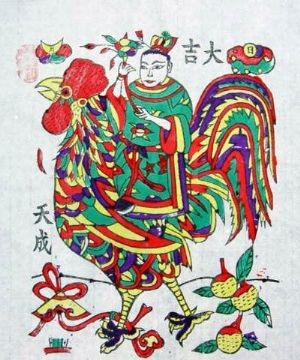
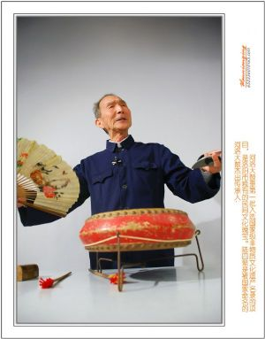
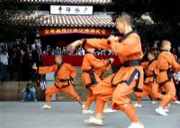

文化
开封盘鼓
开封盘鼓又称大鼓，是河南省开封市特有的一种传统鼓乐表演艺术。由众多人组成规模大小不一的鼓队，鼓队成员有的击打挎在身前的大扁鼓，有的敲击大镲、马锣等铜器，在“令旗”的指挥下，边演奏着各种复杂的鼓点，一边列队行进在节日的街头、广场。寄托了劳动人民对美满生活的向往和朴素的审美情趣。 作为一种古老的传统民间艺术，开封盘鼓气势宏大、震撼人心，鼓点激越，复杂多变；表演热烈、粗犷、豪放，无沦是在音乐性上还是在舞蹈性上都有极强的艺术表现力和感染力。因此，开封盘鼓深受城乡人民群众的喜爱、久盛不衰。 |
朱仙镇木版年画
朱仙镇位于开封县，明至清朝中叶为中原商坞要冲，商业发达，经济繁荣。它与湖北汉口镇、江西景德镇、广东佛山镇合称中国四大名镇。 朱仙镇的木版年画与天津杨柳青、山东潍坊、江苏桃花坞年画并称中国四大年画。年画作为中国独有的一朵艺术奇葩，是我国古老的民间艺术精华。朱仙镇木版年画距今已有８００多年的历史，诞生于唐，兴于宋，鼎盛于明，历史悠久，源远流长，被誉为中国木版年画之鼻祖。《东京梦华录》记载“北宋京都汴梁，已遍设年画作坊，大量印刷木版年画”“十二月，近岁节，市井皆印卖门神、钟馗、桃板、桃符及财神、肫驴、回头鹿、马、天行帖子”。 |
 |
洛阳牡丹花会
“洛阳地脉花最宜，牡丹尤为天下奇”，洛阳是我国以千年帝都、牡丹花城著称的十三朝古都和历史文化名城。牡丹是我国传统名花，富丽端庄，艳冠群芳，素有“花中之王”的美称。洛阳适宜的气候、肥沃的土壤，加之古都所独有的人文环境，使牡丹与洛阳结下了不解之缘。牡丹在洛阳的种植始于隋、盛于唐、甲天下于宋。牡丹因洛阳名甲天下，洛阳因牡丹增辉添彩。牡丹已经成为洛阳重要的城市形象代表，牡丹文化已经成为洛阳文化的重要组成部分。从全国来看，牡丹已经成为民意国花，并将实至名归正式成为中国的国花。 |
河洛大鼓
河洛大鼓，起源于清末民初，是在洛阳琴书的基础上发展起来的。洛阳琴书旧称“琴音”，早期的伴唱乐器是我国传统的七弦古琴。“琴音”原仅在官宦商绅和文人之间传唱，词曲典雅，流入民间后，改称“琴书”，其琴也改为扬琴。洛阳琴书早期演唱方式多为闭目坐唱，其唱腔委婉细腻，字少腔多，节奏缓慢拖沓，其演唱书目也多为才子佳人悲欢离合的中、短篇。 |
 |
少林功夫
少林功夫是指在河南登封嵩山少林寺这一特定佛教文化环境中历史地形成的，以佛教神力信仰为基础，充分体现佛教禅宗智慧并以少林寺僧人修习的武术为主要表现形式的一个传统文化体系。 少林功夫具有完整的技术和理论体系，它以武术技艺和套路为表现形式，而以佛教信仰和禅宗智慧为文化内涵。 |
 |
洛宁剪纸
洛宁剪纸多来自民间，用于贴窗花，装饰顶棚，装饰灯笼，以及过去妇女做鞋做衣服绣花作为绣花底稿之用。随着时代的发展，剪纸艺术也在不断创新和提高。剪纸艺术工作者应用剪纸反映人民群众的生产生活和社会活动。剪纸的题材丰富，手法多样，风格各异，在洛宁大地形成百花齐放之势。目前，洛宁剪纸的代表人物有李笑白、张秀琴等。他们的作品多次在国内外刊物发表和获奖，并被收藏。 |